Neural Radiance Field!
Project 4
The goal of this project is to take 3D scans on an object and built a Neural Radiance Field (NeRF) if it! This representation will be used to create new views of the object from any camera angle. Each stage builds on the last, ultimately enabling realistic renderings of the scanned object from unseen perspectives.
Part 0: Calibrating Camera and Capturing 3D Scan
The goal of this section is to estimate camera intrinsics, capture multi-view images for 3D reconstruction, and determine camera poses for each view.
- Estimate Camera Instrinsics: visual tracking targets called ArUco tags help detect the same 3D points across multiple images. I took around 50 photos of these calibration tags from different angles and distances, and used OpenCV's ArUco detector to detect the tags in each image. After mapping the tag's corners in the image to their known 3D world coordinates, I used cv2.calibrateCamera() to estimate the camera's intrinsic parameters and lens distortion coefficients.
-
Capture a 3D Object Scan: I choose one of the ArUco tags used in calibration and placed an object next to it and took around 50 photos from
varying angles, trying to capture the entire view of the object while keeping the tag visible in each shot. These images will be used for 3D reconstruction.
Couple examples of the captured images: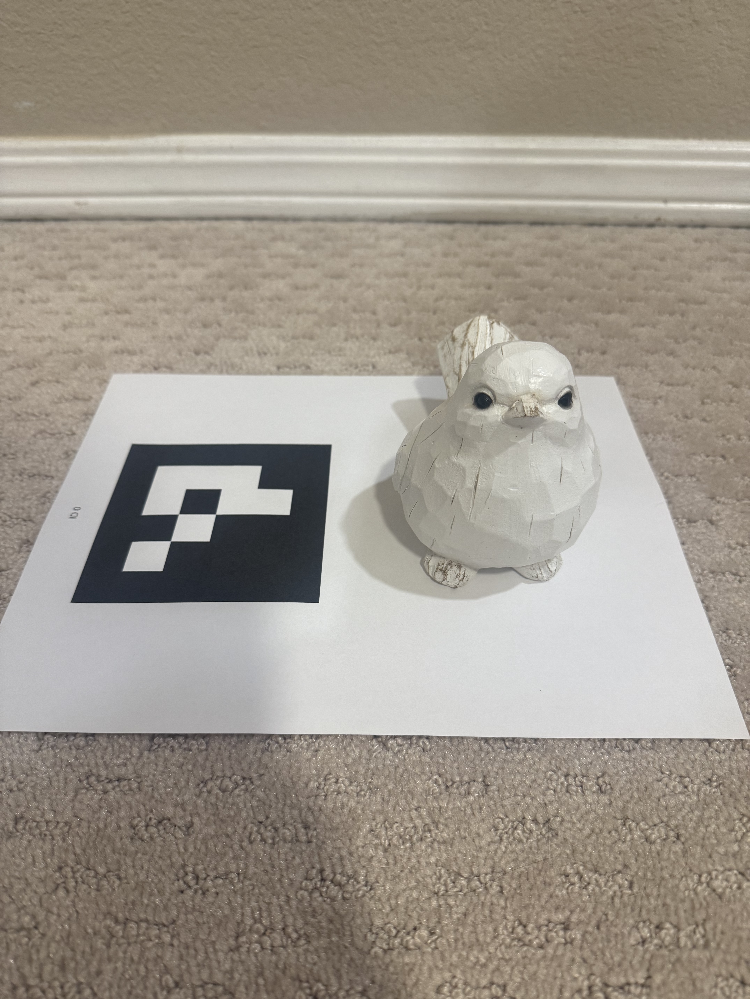

- Estimating the Camera Pose : This is a Perspective-n-Point (PnP) problem where given a set of 3D points in world coordinates and their corresponding 2D projections in an image, we want to find the camera's extrinsic parameters (rotation and translation). After detecting the ArUco tags in each image of the object scan, mapping them to their 3D coordinates, and using the previously estimated camera intrinsics and distortion coefficients, I used cv2.solvePnP() to estimate the camera's rotation and translation vectors for each image.
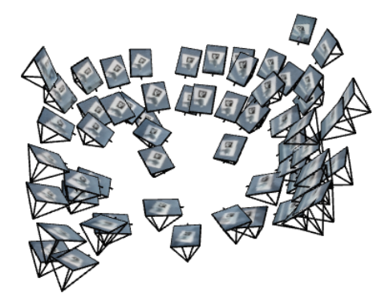
Angle 1: Viser visualization of estimated camera poses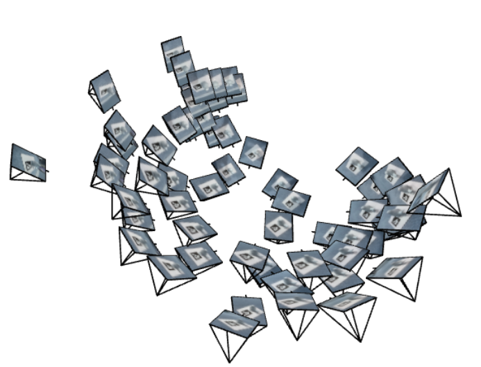
Angle 2: Viser visualization of estimated camera posesPart 1: Fit a Neural Field to a 2D Image
The goal of this section is to implement a neural field that maps 2D coordinates to RGB colors, effectively learning to represent a 2D image.
Overview
- Dataloader: given an image, this function randomly samples a batch of 2D pixel coordinates and returns these coordinates and their responding RGB color values. The 2D coordinates and RGB values are normalized for better training stability.
-
Sinusoidal Positional Encoding: as mention in the NeRF paper, mapping inputs to a higher dimensional space using high frequency functions before passing
them to the neural network enables better fitting of data that contains high frequency details. Positional encoding applies a series of sinusoidal functions to input coordinates,
to expand its dimensionality. The L is the highest frequency level used for encoding.
$$ PE(x) = \{x, \; \sin\big(2^0 \pi x\big), \; \cos\big(2^0 \pi x\big), \; \ldots, \; \sin\big(2^{L-1} \pi x\big), \; \cos\big(2^{L-1} \pi x\big) \} $$
- Model: the feedforward neural network consists of linear layers, ReLU activation functions, and a final sigmoid layer. It takes the positional encoded 2D coordiantes as inputs and outputs RGB color values.
- Loss Function, Optimizer, and Metric: mean square error(MSE) loss function is used to measure the difference between predicted and true RGB values. Adam optimizer is used to update the model parameters during training. Peak Signal-to-Noise Ratio (PSNR) is used as a metric to evaluate the quality of the reconstructed image.
Model Architecture
- The multilayer perceptron (MLP) consists of 4 hidden layers. The first layer takes the positional encoded 2D coordinates (shape: N x (2 + 4L)) as input and outputs a 256-dimensional feature vector. The two middle hidden layers each output 256 channels. The final hidden layer outputs 3 channels corresponding to the RGB colors of the image. ReLU activations are applied between the first three hidden layers, and a sigmoid activation follows the last layer to constrain the predicted RGB values to the range [0, 1].
- I used positional encoding with L=10 frequency levels, which expands the 2D input coordinates to a 42-dimensional vector before passing them to the MLP. The learning rate for the Adam optimizer was set to 0.01, and the model was trained for 2000 iterations with a batch size of 10k pixel coordinates sampled from the image.
 Feedforward Neural Network
Feedforward Neural Network
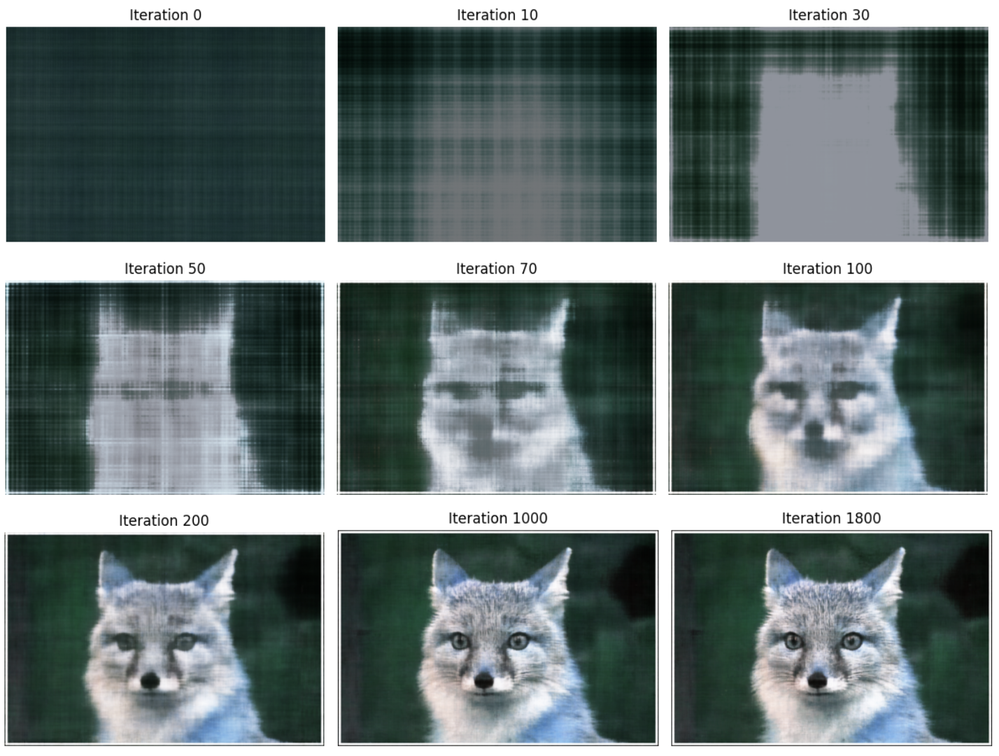
Image Progression During Training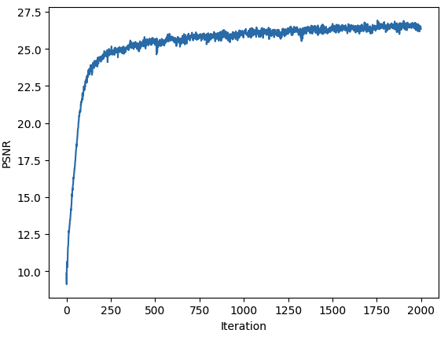
PSNR Progression During TrainingI repeated the same process for another image below:
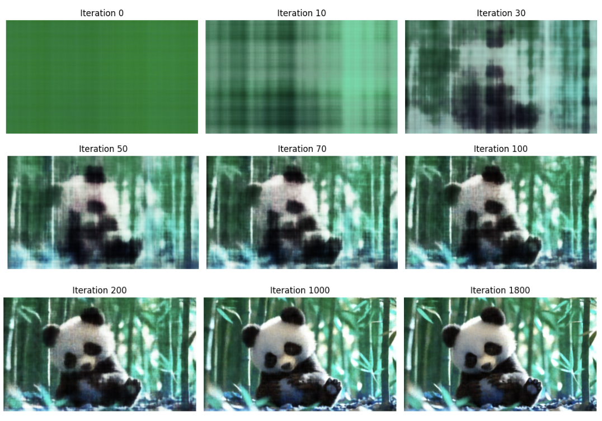
Image Progression During Training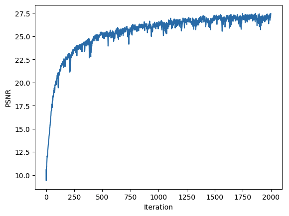
PSNR Progression During TrainingNext, I tried a combinations of different hyperparameters, specifically the number of frequency levels L used in positional encoding and the width of the hidden layers in the MLP, while keeping the iterations, learning rate, and batch size constant. The image progressions for each combination are shown below:
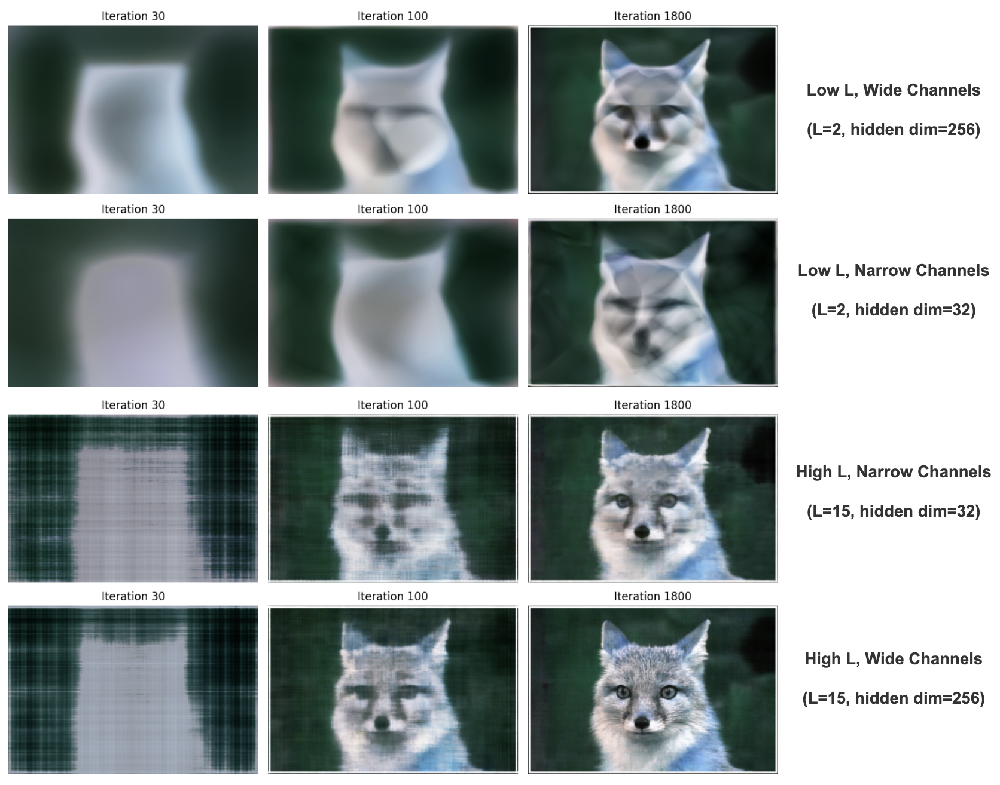
Hyperparameters Combination Image ProgressionPart 2: Fit a Neural Radiance Field from Multi-view Images
The goal of this section is to expand the 2D case from before and implement a neural radiance field to represent a 3D space. First we will begin by using a low resolution (200x200) Lego scene from the original NeRF paper, and then try to build a NeRF on our custom dataset.
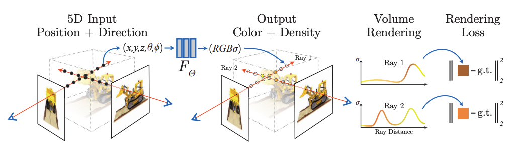
The high-level idea behind NeRF is that we take multiple 2D images of a scene from different viewpoints. Each pixel in an image corresponds to a ray of light that starts at the camera and travels into the scene in a specific direction. We then sample points along these rays, compute their volumetric rendering, and use a MLP to predict the color associated with those sampled 3D points.
There are couple functions and sampling we need to implement to execute the entire NeRF pipeline.
Part 2.1: Create Rays from Cameras
Camera to World Coordinate Conversion
c2w_transform(c2w, x_c_N) which takes in homogeneous camera coordinates,
extracts the rotation and translation components from the camera-to-world matrix and applies the transformation \( x_w = R \cdot x_c + t \). I implemented this function
to handle batches of coordinates at once and made sure to expand dimensionality when needed.
Pixel to Camera Coordinate Conversion
I implementedpixel_to_camera(K, uv_N, s), which converts pixel coordinates to camera space coordinates. Here
K is the intrinsic matrix of the camera, which is defined as:
\[
\mathbf{K} =
\begin{bmatrix}
f_x & 0 & o_x \\
0 & f_y & o_y \\
0 & 0 & 1
\end{bmatrix}, \quad
o_x = \frac{\mathrm{image\_width}}{2}, \quad
o_y = \frac{\mathrm{image\_height}}{2}, \quad
f_x, f_y = \text{focal lengths}
\]
Go to get a transformation between camera coordiates to pixel coordinates, I inversed the process relating pixel coordinates to camera coordinates,
such that
\[
\begin{bmatrix} x_c \\ y_c \\ z_c \end{bmatrix}
=
\mathbf{K}^{-1}
\left(
s \begin{bmatrix} u \\ v \\ 1 \end{bmatrix}
\right),
\quad s = z_c \text{ (depth along the optical axis)}
\]
Similiar to the function before, I implemented the function to handle batches of pixel coordiantes and extended dimentionality when needed.
Pixel to Ray
pixel_to_ray(K, c2w, uv_N) converts a pixel coordinate to a ray with origin and normalized direction. The origin vector is the location
of the camera in the world coordinate, and we can get this value by extracting the translation vector from the camera-to-world (c2w) matrix and setting
\( \mathbf{r}_o = t \). Next, I used the pixel_to_camera function to convert the pixel coordinates into camera space coordinates. I then used
the c2w_transform function to convert the camera space coordinates into world coordinates to calculate the direction ray defined as:
\begin{align} \mathbf{r}_d = \frac{\mathbf{X_w} -
\mathbf{r}_o}{||\mathbf{X_w} -
\mathbf{r}_o||_2} \end{align}
Similar to the other functions, this function handles batches of pixel coordinates.
Part 2.2: Sampling
Sampling Rays from Images Globally
sample_rays_from_img is a global sampling of rays across multiple images. It treats all pixels from all images as a single flattened pool
and randomly selects N indices from this pool. Each sampled index is converted into a specific image and pixel coordinates using integer division and modulo: the division
determines which image the pixel belongs to, and the modulo gives the pixel's position within that image. I added 0.5 for the x and y coordinates to account for the offset from image coordinate (corner of a pixel) to pixel center.
For each sampled pixel, we'll compute the corresponding 3D ray in
world coordinates using the camera intrinsics and camera-to-world matrix, and retrieve the pixel's color. The function outputs arrays of ray origins, directions, and colors
sampled globally across the entire dataset rather than per image. Here is a high level pseudocode:
def sample_rays_from_img(N, images, K, c2ws):
Ensure all images have the same height H and width W
total_pixels = number of images * H * W
sampled_indices = randomly select N indices from total_pixels
For each index in sampled_indices:
image_index = index // (H * W) # determine which image
pixel_index = index % (H * W) # pixel within that image
u = (pixel_index % W) + 0.5
v = (pixel_index // W) + 0.5
ray_origin, ray_direction = pixel_to_ray(K, c2ws[image_index], [u, v, 1])
color = images[image_index][v-0.5, u-0.5]
Store ray_origin, ray_direction, color
Return arrays of ray_origins, ray_directions, colors
Sampling Points along Rays
t = np.linspace(near, far, n_samples) to
uniformly generate samples along a ray. For the Lego dataset, near=2 and far=6. I also added small perturbations during
training to cover every location along the ray. The number of sample points per ray (n_samples) is 64.
The corresponding 3D coordinates along the ray are given by \( \mathbf{x} = \mathbf{r}_o + \mathbf{r}_d \, t \).
Part 2.3: Putting the Dataloading All Together
sample_rays_from_img function described above,
points along rays can be sampled with sample_pts, and all rays for a specific image can be retrieved using get_full_image_rays. This setup makes it convenient to train the neural rendering model later,
and to render novel scene views. These are the results of visualizing the dataloader's outputs in Viser:
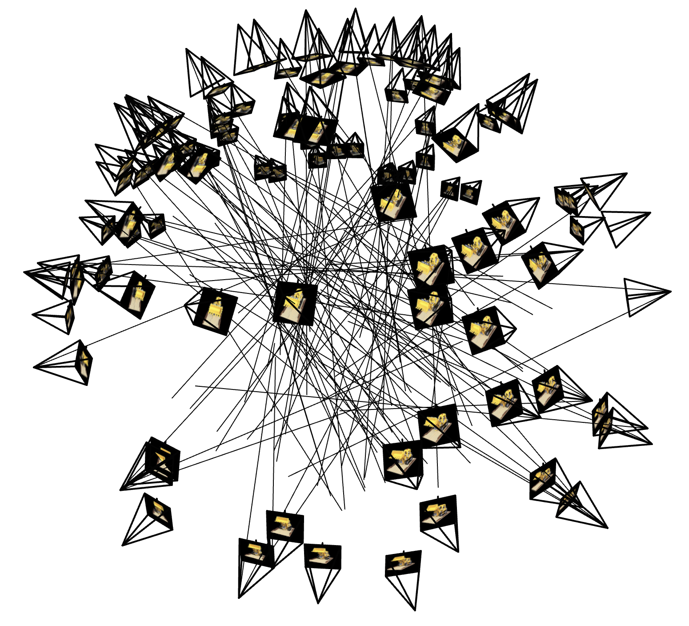
100 Rays Sampled Globally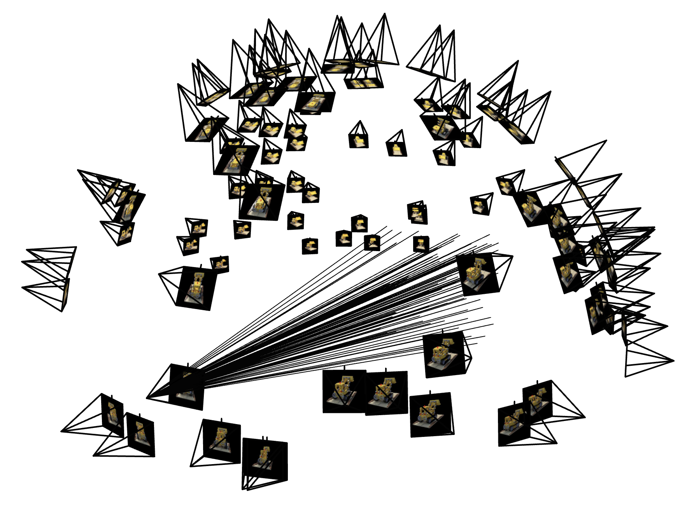
Rays Sampled from One ImageWe can also visualize rays sampled throughout the image vs. rays sampled only from one part of the image:
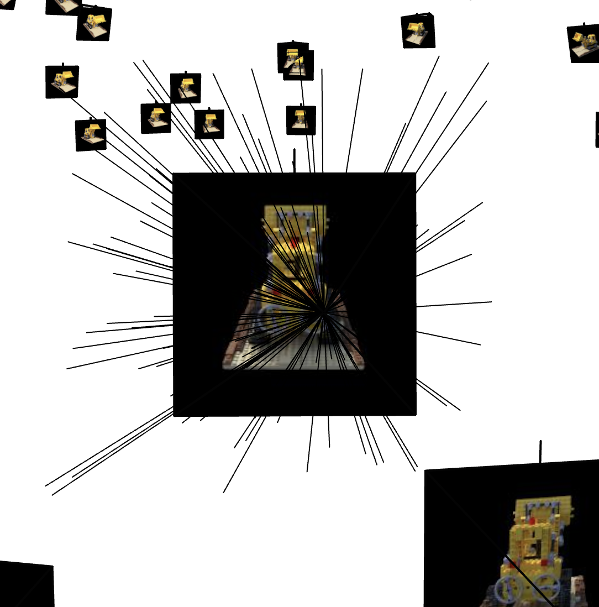
Rays Sampled from the Entire Image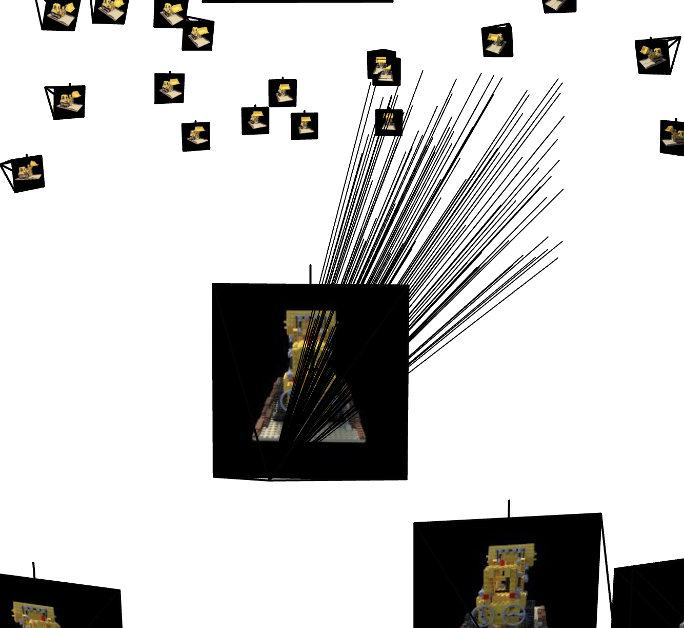
Rays Sampled from Upper Corner of ImagePart 2.4: Neural Radiance Field

- The base MLP has fully connected linear layers, each with a hidden dimension of 256
- ReLU nonlinearities are applied between these layers
- A skip connection is added after the 4th linear layer, concatenating the positional encoding of the 3D coordinate with the last hidden layer output. This helps avoid vanishing gradients and allows the network to "remember" the input
- After the skip connection, three more sets of linear + ReLU layers process information about the scene and the positional encoded input
- One branch of the network is responsible for learning the density of a given point. We apply a ReLU nonlinearity at the end to ensure the density is non-negative
- Another branch has a skip connection and concatenates the positional encoding of the direction ray. This allows the color of a sampled point to depend on the viewing direction, which is important because the color of a sampled point depends on the direciton ray as the same point in space could have different colors due to various lighting effects if viewed from different angles. We went apply a sigmoid function to ensure the output color is normalized to [0,1]
- We used positional encoding L=10 for 3D coordinates and L=4 for direction rays. Hidden dimensions are 256, as shown in the diagram
Part 2.5: Volume Rendering
- The accumulated light blocked up to point \( t \) (transmittance)
- The density at the point, \( \sigma(\mathbf{r}(t)) \)
- The emitted color at the point along the ray, \( \mathbf{c}(\mathbf{r}(t), \mathbf{d}) \), which depends on viewing direction \( \mathbf{d} \)
volrend function implements discrete volume rendering used in NeRF. For a set of densities (sigmas) and colors (rgbs) sampled along a ray, it first computes the alpha values representing the probability of light being absorbed at each sample, \(\alpha_i = 1 - \exp(-\sigma_i \, \Delta)\),
where step_size corresponds to \(\Delta\). The transmittance \(T_i\), representing the fraction of light that reaches sample \(i\), is calculated using the cumulative product of \(1-\alpha\) along the ray via torch.cumprod (similar to in discussion). Each sample is then weighted by its visibility,
\(w_i = T_i \cdot \alpha_i\),
and the final color along the ray is obtained as a weighted sum of the RGB values \(C = \sum_i w_i \, \mathbf{c}_i\). This approach captures both occlusion and color contribution from each discretized point along the ray.
Lego Dataset Results!
- 2000 iterations
- Batch size of 10,000
- Learning rate = 5e-4
- n_samples = 64 (number of sampled points along each ray)
- Far = 6, Near = 2 for uniform sampling along each ray
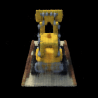
Lego Novel View 3D Rendering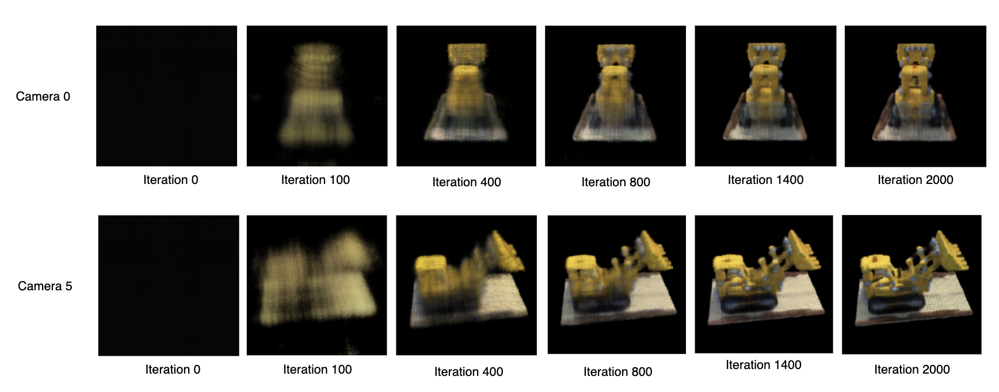
Training Image Progression from Two Different Angles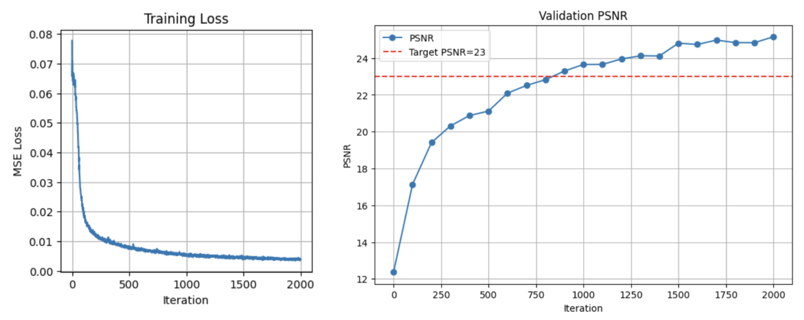
Training Loss and Validation PSNRPart 2.6: Training with your own data
Building own dataset
cameraMatrix) and distCoeffs calculated from all the calibration tags to get the initial intrinsic parameters of my camera.
- I undistorted the images using
cv2.undistortbecause NeRF expects a pinhole camera and thus no distortion - The original images were
(4284, 5712, 3), which caused long loading times and GPU out-of-memory errors. To fix this, I resized the images to(306, 408, 3), similar in scale to the 200x200 Lego dataset images - After resizing, I scaled the
cameraMatrix(camera intrinsics) accordingly to match the resized images
- I kept the same model architecture as before, with a hidden dimension of 256 for the linear layers.
- I used a higher positional encoding of L = 30 for the 3D coordinates and L = 12 for the ray directions. Increasing the dimensionality of the positional encoding improved the model's expressivity and helped it capture more details in the scene.
- I adjusted the near and far hyperparameters since I took photos closer to the object compared to the Lego dataset. Here, near = 0.03 and far = 0.65.
- I sampled 96 points along each ray (n_samples = 96), instead of the 64 samples used for the Lego dataset.
- Finally, I ran 10,000 training iterations and kept the same batch size as before.
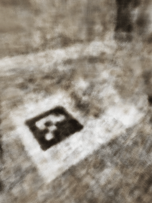
Novel View 3D Rendering for Bird Object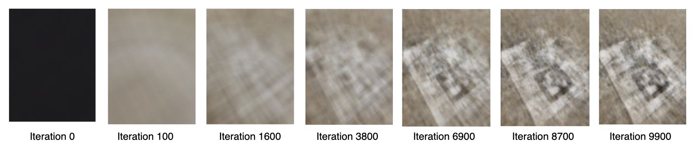
Training Image Progression for Bird Object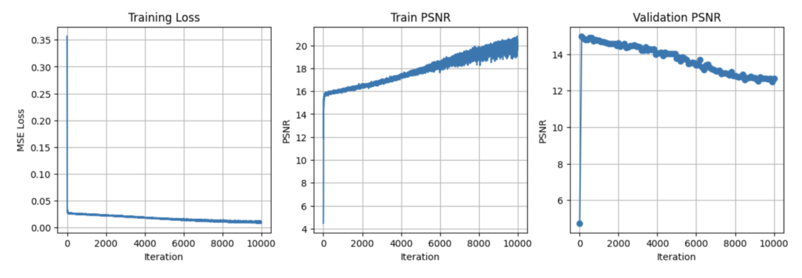
Training Loss and Validation PSNR- The near and far hyperparameters were critical for rendering quality. At first, I set them too large (near = 2, far = 6), which caused the rendering to completely miss the object and the ArUco tag.
- Increasing the positional encoding helped capture more scene detail, but as I raised the encoding dimension, the model began to overfit and the validation PSNR decreased.
- Dataset improvements: although I captured photos from multiple viewpoints, I should have kept the camera-object distance more consistent to ensure better alignment across images. Choosing a larger object that dominates the frame would also help, similar to the Lego dataset.
- I trained the model for 10,000 iterations, but unlike the Lego dataset (which showed object structure around iteration ~400), my custom dataset never produced a clear shape. This suggests there may still be issues in my pose matrices, even after multiple debugging attempts.